There are several types of information that need to be displayed in a grid or table. For example: sports results, stock reports, train timetables.
When representing information in a table, you need to think in terms of a grid made up of rows and columns (a bit like a spreadsheet). In this chapter you will learn how to:
A table represents information in a grid format. Examples of tables include financial reports, TV schedules, and sports results.
Grids allow us to understand complex data by referencing information on two axes.
Each block in the grid is referred to as a table cell. In HTML a table is written out row by row.
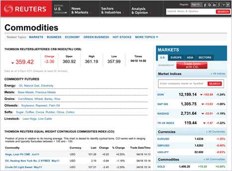
The <table> element is used to create a table. The contents of the table are written out row by row.
You indicate the start of each row using the opening <tr> tag. (The tr stands for table row.)
It is followed by one or more <td> elements (one for each cell in that row).
At the end of the row you use a closing </tr> tag.
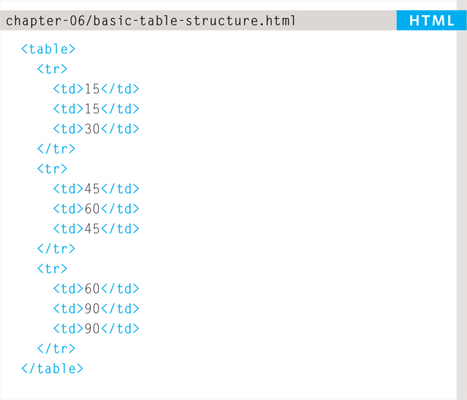
Each cell of a table is represented using a <td> element. (The td stands for table data.)
At the end of each cell you use a closing </td> tag.
Some browsers automatically draw lines around the table and/or the individual cells. You will learn how to control the borders of tables using CSS on pages 309-312 and 337-340.
The <th> element is used just like the <td> element but its purpose is to represent the heading for either a column or a row. (The th stands for table heading.)
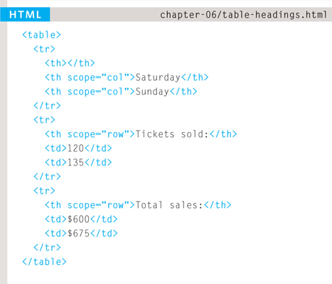
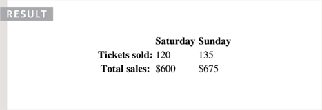
Even if a cell has no content, you should still use a <td> or <th> element to represent presence of an empty cell otherwise the table will not render correctly. (The first cell in the first row of this example shows an empty cell.)
Using <th> elements for headings helps people who use screen readers, improves the ability for search engines to index your pages, and also enables you to control the appearance of tables better when you start to use CSS.
You can use the scope attribute on the <th> element to indicate whether it is a heading for a column or a row. It can take the values: row to indicate a heading for a row or col to indicate a heading for a column.
Browsers usually display the content of a <th> element in bold and in the middle of the cell.
Sometimes you may need the entries in a table to stretch across more than one column.
The colspan attribute can be used on a <th> or <td> element and indicates how many columns that cell should run across.
In the example on the right you can see a timetable with five columns; the first column contains the heading for that row (the day), the remaining four represent one hour time slots.
If you look at the table cell that contains the words ‘Geography’ you will see that the value of the colspan attribute is 2, which indicates that the cell should run across two columns. In the third row, ‘Gym’ runs across three columns.
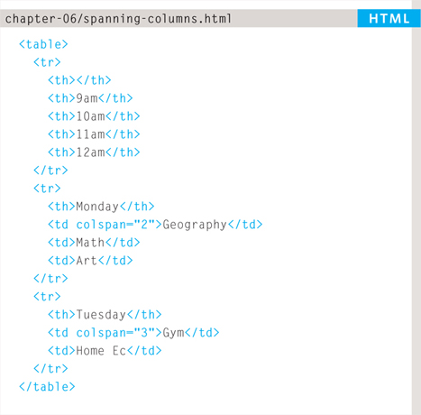
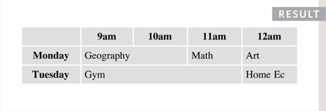
You can see that the second and third rows have fewer <td> elements than there are columns. This is because, when a cell extends across more than one column, the <td> or <th> cells that would have been in the place of the wider cells are not included in the code.
I added some CSS styles to this example so that you can see how the cells span more than one column. You will learn how to do this on pages 250, 337-340.
You may also need entries in a table to stretch down across more than one row.
The rowspan attribute can be used on a <th> or <td> element to indicate how many rows a cell should span down the table.
In the example on the left you can see that ABC is showing a movie from 6pm - 8pm, whereas the BBC and CNN channels are both showing two programs during this time period (each of which lasts one hour).
If you look at the last <tr> element, it only contains three elements even though there are four columns in the result below. This is because the movie in the <tr> element above it uses the rowspan attribute to stretch down and take over the cell below.
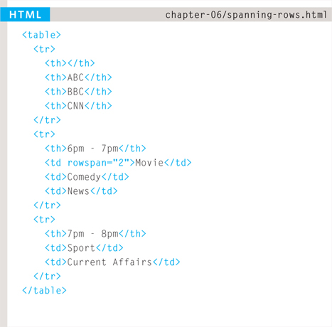
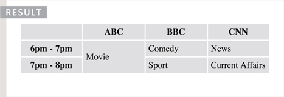
I have added some CSS styles to this example so that you can see how the cells span more than one row. You will learn how to apply these CSS styles to tables on pages 250, 337-340.
There are three elements that help distinguish between the main content of the table and the first and last rows (which can contain different content).
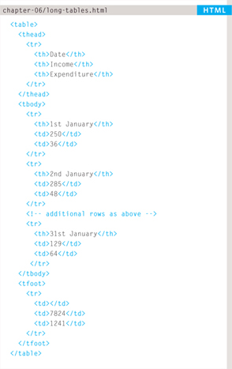
These elements help people who use screen readers and also allow you to style these sections in a different manner than the rest of the table (as you will see when you learn about CSS).
The headings of the table should sit inside the <thead> element.
The body should sit inside the <tbody> element.
The footer belongs inside the <tfoot> element.
By default, browsers rarely treat the content of these elements any differently than other elements however designers often use CSS styles to change their appearance.
Some of the HTML editors that come in content management systems offer tools to help draw tables. If the first row of your table only contains <th> elements then you may find that the editor inserts a <thead> element automatically.
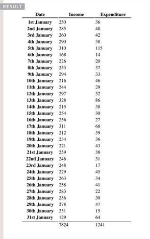
Part of the reason for having separate <thead> and <tfoot> elements is so that, if you have a table that is taller than the screen (or, if printed, longer than one page) then the browser can keep the header and footer visible whilst the contents of the table scroll. This is intended to make it easier for users to see which column the data is in (however this functionality is not implemented by default in any current browser).
I have added some CSS styles to this example so that you can see the contents of the <thead> and <tfoot> being treated differently than the rest of the rows. You will learn how to apply these CSS styles to tables on pages 309-312 and 337-340.
There are some outdated attributes which you should not use on new websites. You may, however, come across some of them when looking at older code, so I will mention them here. All of these attributes have been replaced by the use of CSS.
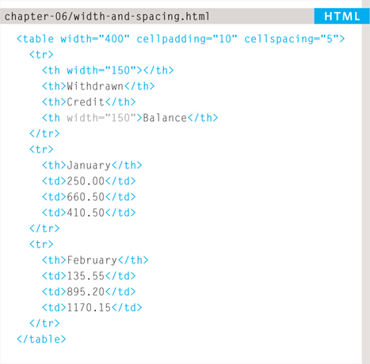
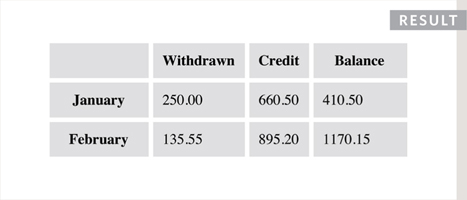
The width attribute was used on the opening <table> tag to indicate how wide that table should be and on some opening <th> and <td> tags to specify the width of individual cells. The value of this attribute is the width of the table or cell in pixels.
The columns in a table need to form a straight line, so you often only see the width attribute on the first row (and all subsequent rows would use that setting).
The opening <table> tag could also use the cellpadding attribute to add space inside each cell of the table, and the cellspacing attribute to create space between each cell of the table. The values for these attributes were given in pixels.
I added CSS styles to this example so that you can see the width of the table cells more clearly. If you want to control the width or spacing of tables and cells you should use CSS as shown on pages 303, 337-340.
The border attribute was used on both the <table> and <td> elements to indicate the width of the border in pixels.
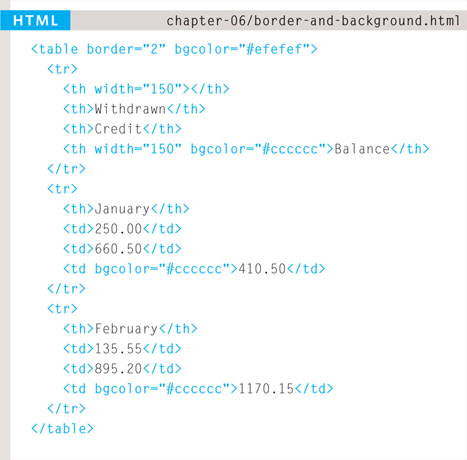
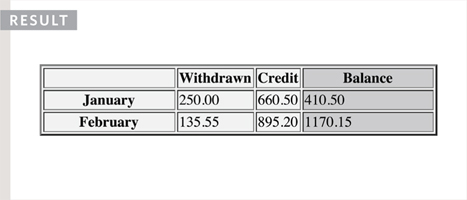
The bgcolor attribute was used to indicate background colors of either the entire table or individual table cells. The value is usually a hex code (which we discuss on pages 249-252).
This example uses the HTML border and bgcolor attributes. No CSS attributes were utilized in this example.
When building a new website you should use CSS to control the appearance of the table rather than these attributes. They are only covered here because you may come across them if you look at the code of older websites.
This example shows a table for customers to compare website hosting packages. There are table headings in the first row and first column of the table.
The empty cell in the top left still has a <th> element to represent it. Each cell of the table must be accounted for by a <th> or <td> element. The <th> elements use the scope attribute to indicate whether they are headings for a row or column. The final row uses the colspan attribute to spread across all three columns.
<html> <head> <title>Tables</title> </head> <body> <table> <thead> <tr> <th></th> <th scope=“col”>Home starter hosting</th> <th scope=“col”>Premium business hosting</th> </tr> </thead> <tbody> <tr> <th scope=“row”>Disk space</th> <td>250mb</td> <td>1gb</td> </tr> <tr> <th scope=“row”>Bandwidth</th> <td>5gb per month</td> <td>50gb per month</td> </tr> <!-- more rows like the two above here --> </tbody> <tfoot> <tr> <td></td> <td colspan=“2”>Sign up now and save 10%!</td> </tr> </tfoot> </table> </body> </html>